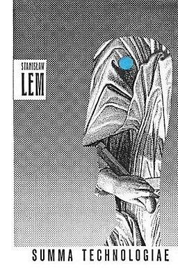

Сумма Технологии
«Су́мма техноло́гии» (лат. Summa Technologiae) — философско-футурологический трактат польского писателя Станислава Лема (1963; первая публикация — 1964; второе издание — 1967; впоследствии неоднократно перерабатывался). Назван с аллюзией на «Сумму теологии» (лат. Summa Theologiæ) Фомы Аквинского и «Сумму теологии» Альберта Великого.
Тематически перекликается с научно-художественным исследованием писателя Артура Кларка «Черты будущего» и научно-популярной монографией астрофизика Иосифа Шкловского «Вселенная, жизнь, разум» (первое издание обеих работ — 1962).
Содержание страницы
Проблематика
Основная цель книги — попытка прогностического анализа научно-технических, морально-этических и философских проблем, связанных с функционированием цивилизации в условиях свободы от технологических и материальных ограничений (по образному выражению автора, «исследование шипов ещё несуществующих роз»):
Чем же, собственно, является эта «Сумма»?
Собранием эссе о судьбах цивилизации, пронизанных
«все-инженерным» лейтмотивом? Кибернетическим толкованием прошлого и будущего? Изображением Космоса, каким
он представляется Конструктору? Рассказом об инженерной деятельности Природы и человеческих рук?
Научно-техническим прогнозом на ближайшие тысячелетия? Собранием гипотез, чересчур смелых, чтобы
претендовать на подлинную научную строгость? — Всем понемногу.
Насколько же можно, насколько допустимо
доверять этой книге? — У меня нет ответа на этот вопрос. Я не знаю, какие из моих догадок и предположений
более правдоподобны. Среди них нет неуязвимых, и бег времени перечеркнёт многие из них. А может быть, и все,
— но не ошибается только тот, кто благоразумно молчит.
Несмотря на значительный срок, прошедший со времени написания работы, а также ряд неточностей, допущенных Лемом в рассуждениях, относящихся к математике, биологии, социологии и некоторым другим областям знания, «Сумма технологии» в целом не только не устарела, но, напротив, приобрела особенную актуальность в интеллектуальном контексте конца XX — начала XXI века. Многие из затронутых Лемом вопросов, в 1960-е годы составлявших исключительную прерогативу научной фантастики — виртуальная реальность, нанотехнологии, искусственный интеллект, технологическая сингулярность, — через 30—40 лет после первой публикации «Суммы» перешли в разряд активно разрабатываемых научных проблем.
Содержание
Основное содержание книги разбито на восемь глав:
- Дилеммы — введение в проблематику «предсказаний будущего». Здесь Лем определяет технологии как «способы достижения целей», которые заключаются в преобразовании природы. Он отмечает случайность и обоюдоострость технологий, которые в пределе являются выражением стремления к господству.
- Две эволюции — техноэволюция и биоэволюция. Лем отмечает параллелизм обеих эволюций. Представители новых эволюционных ветвей обычно примитивны и миниатюрны, тогда как гигантизм характеризует вымирающие эволюционные ветви (бронтозавры, цепеллины). В отличие от техноэволюции, движимой техническим воображением конструктора, биоэволюция слепа и подчинена необходимости приспособления. Тем не менее, техническое воображение утилитарно и подчинено зачастую элементарным потребностям: одеть, накормить, обогреть и защитить. Рассматривая этические аспекты техноэволюции, Лем замечает, что она нередко несёт зло, так как провоцирует несправедливое распределение благ и девальвирует культуру.
- Космические цивилизации — технологические цивилизации и разумная жизнь в космосе и на Земле. Лем отмечает, что вероятность существования жизни во Вселенной достаточно высока, однако эмпирически прослушивание радиосигналов из космоса убеждает нас в отсутствии внеземных цивилизаций. На этом основании Лем признаёт возможную недолговечность космических цивилизаций (гипотеза «самоликвидации психозоя» со ссылкой на Себастьяна фон Хорнера), хотя и надеется на то, что прогресс нелинеен и не всегда должен воплощаться в астроинженерных сооружениях типа сферы Дайсона. Разум по мнению Лема — всего лишь «гомеостатический регулятор».
- Интеллектроника — информационные технологии, религиозно-метафизическая информация, искусственный разум, значение «значения». Лем называет науку каналом, соединяющим цивилизацию и природу, однако пропускная способность этого канала не безгранична («информационный барьер»). Преодолеть эту ситуацию призвана кибернетика. Аллегория кибернетики — средневековый миф о гомункулусе: существе с искусственным мозгом.
- Пролегомены к всемогуществу — конструирование Всего: возможность и осуществимость (имитология и фантоматика).
- Фантомология — виртуальная реальность, виртуализированная цивилизация, виртуализированное общество; цереброматика, телетаксия, фантоматика и фантопликация, «размножение» личности.
- Сотворение миров — развитие науки и прирост знания; «выращивание информации»: возможность и осуществимость; конструирование языка; конструирование «того света» и Универсума.
- Пасквиль на эволюцию — принципиальное несовершенство природы; перспективы реконструкции человека.
В Заключении, помимо прочего, рассматриваются подходы к конструированию человеческого общества.
Переводы
«Сумма технологии» переведена на русский (1968, 2002), немецкий (1976) и английский (отдельные главы 1997—1998, полностью 2013) языки. После выхода книги в Польше она почти сразу начала переводиться и публиковаться в отрывках на русском разными переводчиками и в разных изданиях. В 1968 году эти отрывки были сведены воедино, что, по словам редактора Феликса Широкова, потребовало значительной работы, а часть текста пришлось переводить заново. В 1996 году лакуны и цензурные купюры были восстановлены в первом русском собрании сочинений Лема.